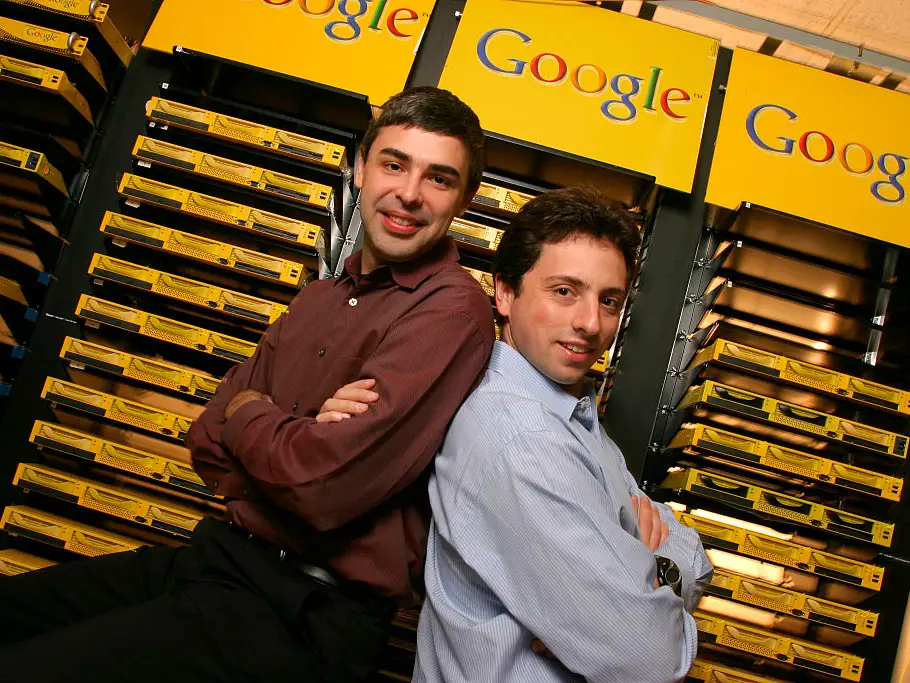

TCP/IP tar form
Vint Cerf och Bob Kahn beskriver en modell där skilda nätverk kan utbyta data utan att byggas likadant.
Internet, webben och sökbarheten
Från protokollen som kopplade samman nätverk, till hypertexten som gjorde information länkbar, till sökmotorerna som gjorde webben möjlig att orientera sig i.
Vint Cerf och Bob Kahn beskriver en modell där skilda nätverk kan utbyta data utan att byggas likadant.
Tim Berners-Lee formulerar idén om ett globalt hypertextsystem där dokument kan länka till varandra.
Google visar hur länkar, indexering och rankning kan göra en växande webb sökbar.
Webben
Gjorde internet till ett läsbart informationsrum med dokument, adresser och länkar som kunde byggas vidare på öppet.
Läs profilen
Internetprotokoll
Var med och formade TCP/IP, modellen som lät internet växa som ett nätverk av nätverk.
Läs profilen
Sökbarhet
Förändrade hur människor hittar information genom att göra länkar, index och relevans till vardaglig navigering.
Läs profilenWebbhistorisk översikt
TCP/IP gör att nätverk kan prata med varandra utan att allt behöver styras från en enda plats.
World Wide Web gör information länkbar genom HTML, HTTP och URL:er.
Sök gör webbens växande informationsmängd möjlig att använda i vardagen.
Öppna regler gör att många aktörer kan bygga vidare utan att fråga samma ägare om lov.
Läsordning